China Employee Termination in 2026: Pulse Incident-Response Cards Brief for Foreign Employers
Key takeaways
- Foreign employers should treat termination instability as incidents to be contained quickly, not issues to be discussed indefinitely.
- A card-based incident model helps teams respond consistently when route, payroll, communication, or closure problems emerge.
- Early containment reduces dispute probability and late-stage rework cost.
- Incident cards work best when each card has a single owner, deadline, and stop/go rule.
- This Pulse brief is impact-first, with legal depth provided in a secondary appendix.
What changed and why this matters now
In many cross-border teams, risk signals are noticed but not operationalized. People agree there is a problem, yet no one triggers a structured response. That delay is expensive. By the time actions start, communication may already be out and credibility may already be damaged.
This run rotates to an incident-response cards format. Instead of tracking readiness levels, it gives concrete “if-this-then-that” response cards for the most common failure modes in China termination execution.
Plain-language legal context first
China termination execution requires consistency across legal route, evidence integrity, payout logic, and communication behavior. When one element breaks, the case can quickly become more vulnerable in dispute settings.
For foreign employers, the practical implication is clear: treat major misalignments as incidents that require immediate containment and coordinated recovery. National law provides the baseline, but local implementation differences should be reflected in each incident response.
Incident-response card set
Card A — Route contradiction incident
Trigger: new facts conflict with approved route assumptions.
Containment goal: stop downstream actions before assumptions propagate.
Immediate actions:
- freeze new communication tasks
- issue route contradiction note
- assign legal owner for revalidation
Exit criteria: contradiction resolved, route memo refreshed, local interpretation note updated.
Card B — Payroll/IIT lock incident
Trigger: multiple active worksheets or unresolved payout/tax assumptions.
Containment goal: restore one source of truth for payout execution.
Immediate actions:
- revoke draft worksheet variants
- assign single worksheet owner
- confirm IIT assumptions in writing
Exit criteria: vFinal worksheet approved, payment plan aligned, no open component conflicts.
Card C — Script divergence incident
Trigger: manager/HR script differs from latest approved route or payout assumptions.
Containment goal: prevent evidentiary inconsistency in communication.
Immediate actions:
- suspend scheduled outreach
- reissue current script pack
- complete manager re-brief
Exit criteria: script version confirmed current, spokesperson acknowledges briefing completion.
Card D — Closure defensibility incident
Trigger: case cannot be reconstructed quickly from final records.
Containment goal: restore post-case defensibility.
Immediate actions:
- reopen closure workflow
- rebuild archive index
- run retrieval simulation
Exit criteria: retrieval test pass, closure memo finalized, record set audit-complete.
Card E — Multi-incident escalation
Trigger: two or more cards active simultaneously.
Containment goal: prevent cascading failure.
Immediate actions:
- appoint incident commander
- set 24-hour stabilization plan
- prioritize containment before optimization
Exit criteria: high-severity card count reduced, downstream blocks lifted safely.
Why this format works for foreign teams
Incident cards reduce ambiguity in distributed organizations. Teams do not need to debate whether something is “serious enough.” If trigger conditions are met, the card activates. This increases response speed and consistency across legal, HR, payroll, and management functions.
It also improves leadership control. Executives can monitor active cards, aging cards, and repeat-card frequency to identify systemic weaknesses.
Practical scenarios
Scenario A: route and payroll both unstable
A route contradiction appears while payroll assumptions remain unresolved.
Cards activated: A + B (+ E for multi-incident).
Action: stabilize route and worksheet first; postpone communication decisions.
Scenario B: script mismatch discovered before manager call
Latest payout assumptions were updated, but script pack was not refreshed.
Cards activated: C.
Action: suspend call, refresh script, log re-brief completion.
Scenario C: internal audit query after case close
Team cannot quickly retrieve final payout rationale and approvals.
Cards activated: D.
Action: reopen closure, run retrieval simulation, then reclose.
Daily operations SOP (role ownership)
Incident coordinator: tracks active cards, deadlines, and resolution status.
Legal owner: owns Card A and legal-local interpretation updates.
Payroll owner: owns Card B and worksheet integrity restoration.
HR/Comms owner: owns Card C and script governance.
Closure owner: owns Card D and retrieval-test compliance.
Executive sponsor: reviews Card E events and approves major escalation decisions.
Document checklist and timing expectations
- Incident trigger log + owner assignment (within 1 hour)
- Containment action list + communication freeze note (within 4 hours)
- Revalidation artifacts (route memo / worksheet / scripts as applicable) (within 24 hours)
- Exit evidence pack + lessons learned note (within 48 hours)
Exception handling playbook
- Card not resolved by SLA: auto-escalate to incident commander.
- Repeat same card >2 times in one month: initiate root-cause and process redesign.
- Card E activation near communication window: mandatory executive hold decision.
- Local interpretation uncertainty during incident: keep incident open until local guidance logged.
System implementation notes
In workflow tools, create card status fields (Active, Contained, Resolved), severity tags, and owner deadlines. Add automation: when Card A/B/C activates, communication tasks are auto-blocked. In payroll tooling, tie worksheet publish rights to incident status.
Track weekly metrics: active-card count, average time-to-contain, repeat-card rate, post-communication corrections, and closure retrieval pass rate.
Common mistakes and prevention
- Mistake: discussing incidents without formal activation.
Prevention: clear trigger thresholds and automatic card creation.
- Mistake: too many owners per card.
Prevention: assign single accountable owner.
- Mistake: lifting blocks before exit criteria are met.
Prevention: explicit exit checklist and sign-off.
- Mistake: no learning loop after resolution.
Prevention: mandatory post-incident lessons log.
What to do now
Implement the five-card set for all active China termination cases this week. Start with Cards A-C and enforce communication blocking when any are active. Run a short daily incident huddle focused on trigger changes, containment progress, and overdue cards.
Then publish a weekly card dashboard for leadership with three metrics: active card volume, repeat card rate, and average containment time. This gives a practical view of whether incident discipline is improving.
What to watch next
- Whether Card B (payroll/IIT lock incident) remains most frequent.
- Whether Card C events increase during high-pressure deadlines.
- Whether Card D retrieval failures decline after closure discipline improves.
FAQ
1) Why use incident cards for termination operations?
They turn ambiguous risk into immediate, repeatable action.
2) Can communication continue while a card is active?
Not for Cards A-C; those incidents require containment first.
3) Which card is usually most expensive if ignored?
Card B often drives costly late-stage resets.
4) How quickly should cards be activated?
As soon as trigger conditions are confirmed, ideally within the same working block.
5) Is this legal advice?
No. It is an operational response framework and does not replace legal or tax advice.
6) What KPI should executives monitor first?
Repeat-card rate is a strong early indicator of control maturity.
Legal depth appendix (secondary)
This brief is anchored in the PRC Labor Contract Law baseline and supplemented by practitioner and payroll references used by multinational employers. It provides an operational incident model and is not legal advice. For material decisions, route, payout, and communication positions should be validated with qualified local advisors.
Soft CTA
If your team needs compliance-first support for China employee termination, China-Payroll.com can help implement incident-response governance, payroll lock controls, and defensible closure workflows.
Disclaimer
This content is informational only and does not constitute legal, tax, or employment advice.
Sources
- National People’s Congress of China, Labor Contract Law of the PRC (English), accessed 2026-03-07: http://www.npc.gov.cn/zgrdw/englishnpc/Law/2007-12/13/content_1384064.htm
- ICLG, Employment & Labour Laws and Regulations: China, accessed 2026-03-07: https://iclg.com/practice-areas/employment-and-labour-laws-and-regulations/china
- Littler, Key Recent Developments in China’s Employment Law, accessed 2026-03-07: https://www.littler.com/news-analysis/asap/key-recent-developments-chinas-employment-law-china-us-comparative-perspective
- PwC Tax Summaries, China Individual — Taxes on Personal Income, accessed 2026-03-07: https://taxsummaries.pwc.com/peoples-republic-of-china/individual/taxes-on-personal-income
- China Briefing, China Human Resources and Payroll Guide, accessed 2026-03-07: https://www.china-briefing.com/doing-business-guide/china/human-resources-and-payroll
Need local employment support in China?
If you need a compliance-first partner for hiring, payroll, and risk controls in China, China-Payroll.com can help evaluate the right setup.
Image Prompt Pack
Create a 16:9 hero image for article title: 'China Employee Termination in 2026: Pulse Incident-Response Cards Brief for Foreign Employers'. Scene: global operations team evaluating workforce model options for China market entry. Include motifs: decision matri…